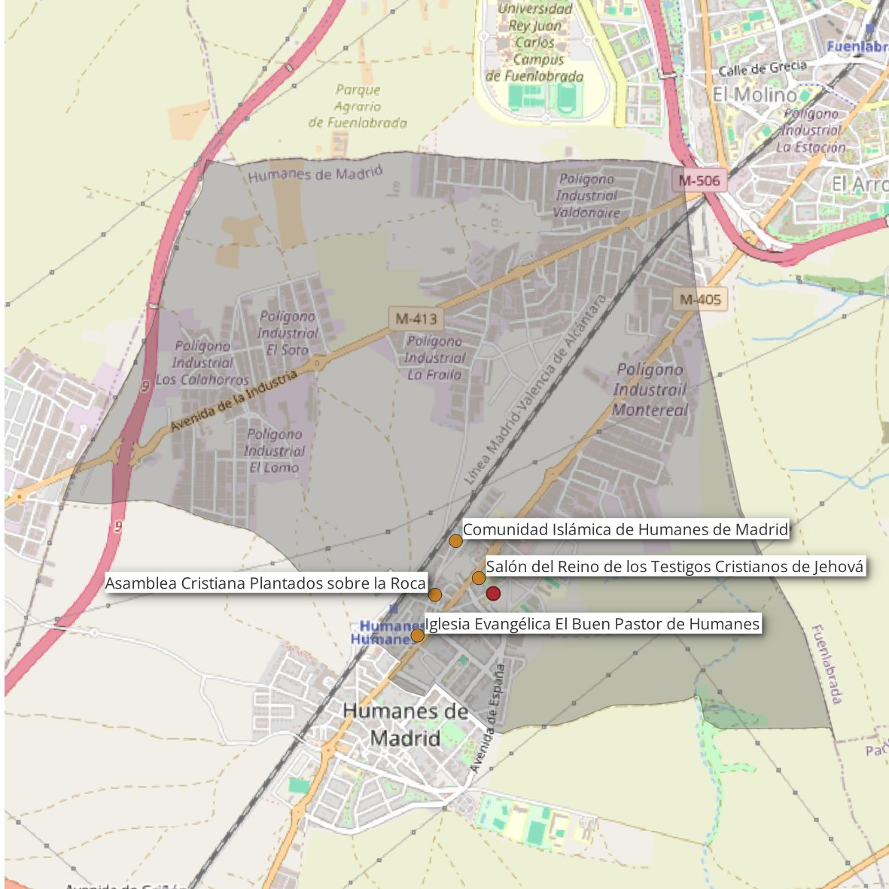
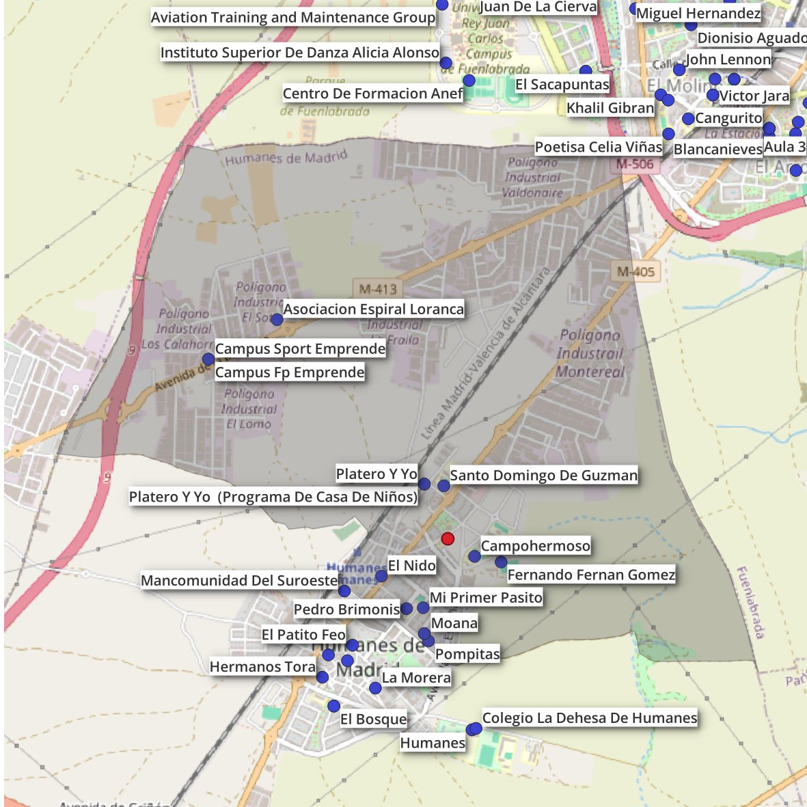

Puntos de interés en el territorio parroquial
Parroquia San Pedro Apóstol (Humanes de Madrid) · Arciprestazgo de Griñón
Entidades religiosas no católicas

4 entidades religiosas no católicas en el territorio de la parroquia.
Evangélicos (2)
- Asamblea Cristiana Plantados sobre la RocaCalle Leganés 6 2ºC, Humanes de Madrid
- Iglesia Evangélica El Buen Pastor de HumanesCalle Madrid 69, Humanes de Madrid
Musulmanes (1)
- Comunidad Islámica de Humanes de MadridCalle Jacinto Benavente 11 Local 4, Humanes de Madrid
Testigos de Jehová (1)
- Salón del Reino de los Testigos Cristianos de JehováCalle Madrid 70, Humanes de Madrid
Fuente: Registro de Entidades Religiosas del Ministerio de la Presidencia, Justicia y Relaciones con las Cortes. Situación en el mapa: dirección geocodificada con CartoCiudad (IGN) o Nominatim (OpenStreetMap).
Centros educativos

9 centros educativos en el territorio de la parroquia (público: 5, privado: 4).
| Centro | Tipo | Titularidad | Domicilio | Web |
|---|---|---|---|---|
| CAMPOHERMOSO | Colegio de educación infantil y primaria | Público | Calle Valdehondillo, 1, 28970 Humanes de Madrid | Página web |
| CAMPUS FP EMPRENDE | Centro privado de formación profesional específica | Privado | Avenida de la Industria, 70, 28970 Humanes de Madrid | Página web |
| EL NIDO | Escuela infantil privada | Privado | Calle Madrid, 71, 28940 Humanes de Madrid | |
| FERNANDO FERNAN GOMEZ | Instituto de educación secundaria | Público | Calle Valdehondillo, 8, 28970 Humanes de Madrid | Página web |
| MI PRIMER PASITO | Escuela infantil privada | Privado | Calle Isla del Aire, 8, 28970 Humanes de Madrid | Página web |
| MOANA | Escuela infantil privada | Privado | Calle Manacor, 1, 28970 Humanes de Madrid | |
| PEDRO BRIMONIS | Colegio de educación infantil y primaria | Público | Calle Isla Conejera, s/n, 28970 Humanes de Madrid | Página web |
| PLATERO Y YO | Escuela infantil | Público | Calle de Jacinto Benavente, 15, 28970 Humanes de Madrid | Página web |
| SANTO DOMINGO DE GUZMAN | Colegio de educación infantil y primaria | Público | Calle de Severo Ochoa, 4, 28970 Humanes de Madrid | Página web |
Fuente: registro de centros educativos de la Comunidad de Madrid. Solo se recogen los centros de alta.